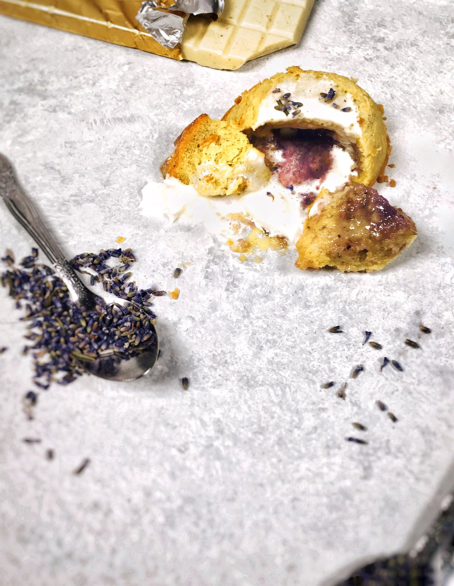
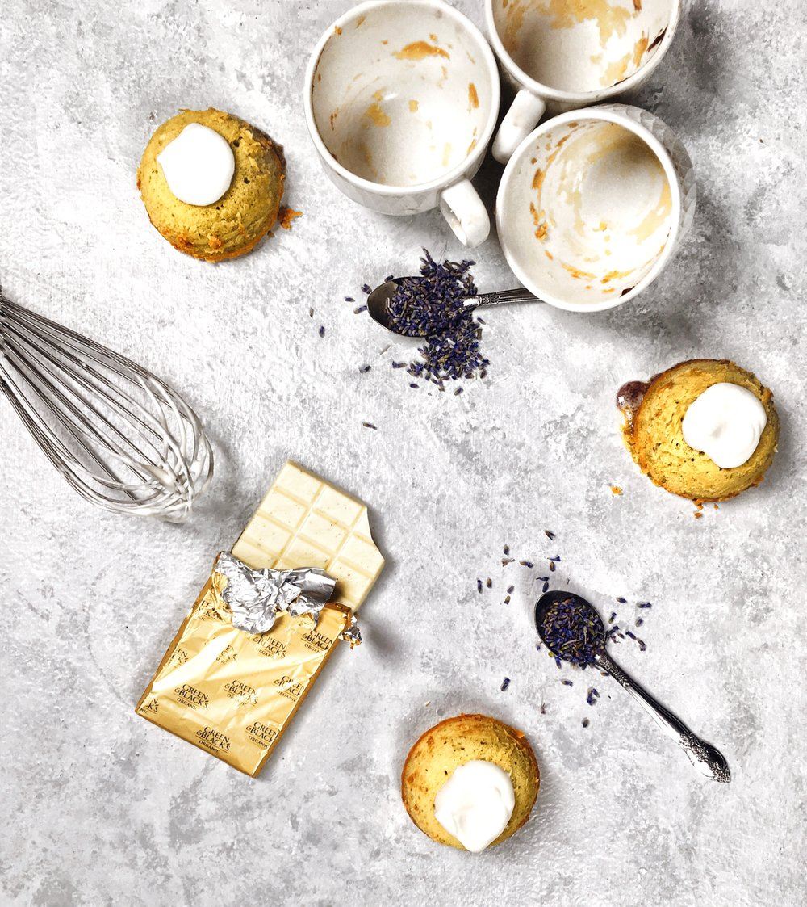

White Chocolate Lavender Lava Cake
February 11, 2019
For The Hopeless Romantic
It’s T-3 days until Valentine’s Day, and I‘ve got to be honest and say that the prospect only excites me because Valentine’s Day bakes & pastries make me happy. In other words, screw cheesy love.
That being said, I did feel obligated to bake & shoot a Valentine’s inspired dessert because I figure that the hopeful outnumber the angst ridden non-believers like me. Of course, you already know that my next post will be full of angst, hate for love, and all the other fantastic qualities that have defined my current, very single relationship status.
The Bake
Is it just me, or is there a senseless connection between Valentine’s Day and Lava Cake? I get the appeal with the heart shaped cookies and chocolate covered strawberries, but lava cake? I honestly can’t think of a plausible reason why lava cake could come to symbolize love, but I must admit they are extremely tasty and delicious. That moist, delicate cake stuffed with a hot, creamy filling that just oozes out — pastry perfection.
This lava cake is inspired by a recipe from the British lads from SORTED food and features one of my favorite flavors — lavender! I have a feeling lavender often gets a bad rep for being “soapy” or “too floral”. Honestly, the general public is to blame because lavender only tastes like commercial bath products when overused. A teaspoon or two is more than enough. Another aspect of lava cake I love? It’s so easy to customize. As long as you’re obsessed with chocolate — and tbh, who isn’t? — you’re good to go with this recipe. And of course, there’s no reason you can’t make this white chocolate lavender lava cake even if you’re not a huge fan of love & dove. For foodies like me, that just means I get more to myself, am I right?
Cheers
Bradley
Recipe
Ingredients (inspired by SORTED Food)
- 100g white chocolate, melted
- 1/4 cup butter
- 3 eggs
- 1 tsp vanilla extract
- 1/4 cup granulated white sugar
- 1/4 cup all-purpose flour
- 2 tsp. dried lavender
- 1/2 tsp. salt
- violet gel food coloring (as needed)
How to make
- Grease three molds - used teacups - with butter and dust with a thin layer of equal parts flour and powdered sugar. Make sure to tap out any excess against the walls of a sink. Set aside.
- Melt the white chocolate chunks and butter gently over a bain marie. Stir in the chopped, dried lavender.
- In a separate bowl, combine the eggs, sugar, and vanilla and whisk until the sugar dissolves. Slowly whisk into the white chocolate and butter mixture until fully incorporated. Fold in the all-purpose flour.
- Set aside 3 tbsp. of the batter into a separate bowl. Add a sparse amount of violet gel food coloring and whisk to dye the batter.
- Fill the prepared moulds with approximately 1/4 cup of batter and place a tbsp. of the violet batter in the center. Top off with the remaining non-dyed batter. Freeze for at least 2 hours and up to a month.
- Preheat the oven to 180C/355F. Bake the frozen batter for approximately 25-30 minutes, and leave to rest for 5 minutes before releasing the cakes from their molds.
- Serve warm with whipped cream or ice cream.
- Enjoy!
Meet the brad behind the butter...

Hello and welcome to you new home! I'm Bradley, a junior Hotelie, a self-taught baker, bartender, and a flatlay freak. Here on Brad & Butter, I bake, shake, style, and snap tot tell inspiring stories. This blog is a manifestation of all the things in life at have inspired me to act upon something. And in turn, I hope that whatever I wrtie, bake, or shake can inspire other people. Click here to learn about me...
Read Moreeat pretty
drink pretty
sing pretty
live pretty
you are pretty
recent posts


leave a reply